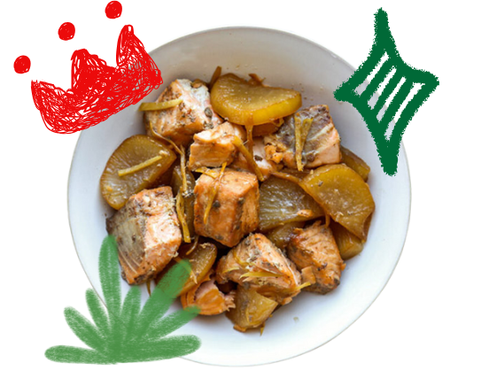

Erik's Tasting Notes:
-
Oh boy, this dish is like a cozy hug in a bowl! Tender,
melt-in-your-mouth salmon swims with zesty ginger slices
and cool, crunchy daikon—what a team! In Japan, they’d
call this a nimono, which means it’s all about simmering
things to tasty perfection. The sweet-and-savory broth is
so good, it practically begs for a sidekick of fluffy white
rice and a warm bowl of miso soup. Trust me, you’ll want
seconds!
-